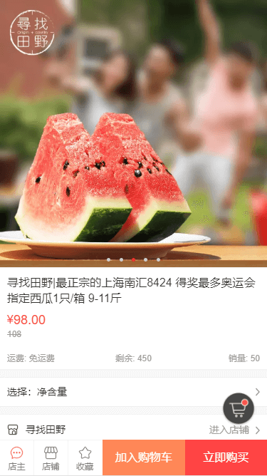
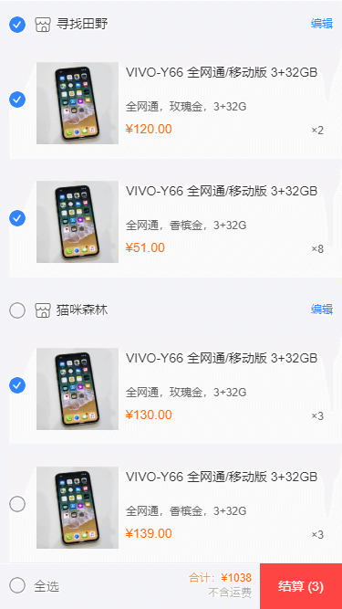
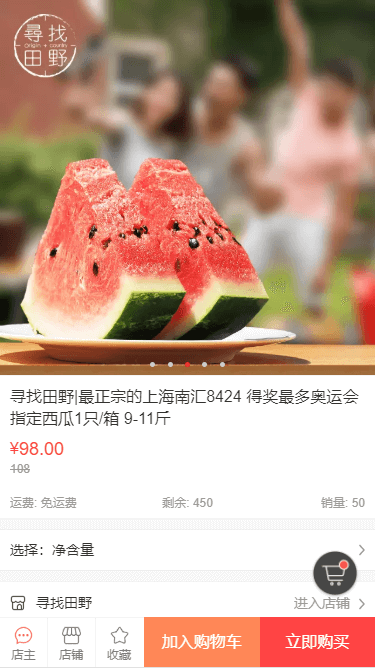
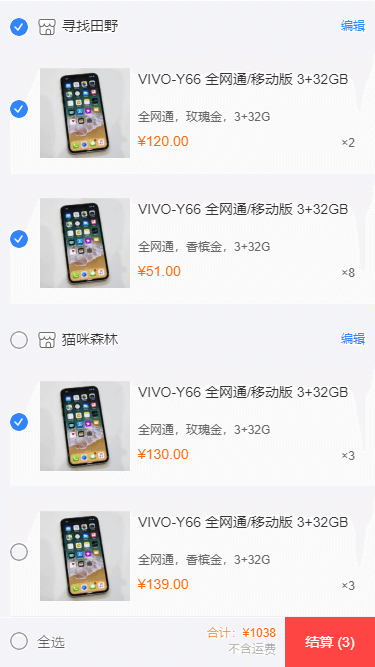

153 6158 4160
cgz0722w@gmail.com
153 6158 4160

熟悉HTML语义化及常用标签，了解Canvas、Audio、Video等功能性标签
熟练使用flex等CSS常用布局，掌握CSS3动画、过渡效果等新增特性，能够使用SCSS常用语法
熟悉原生JavaScript，理解闭包、原型链、异步等基础概念，能够使用ES6+常用语法，能够使用jQuery常用API，了解其封装思想
熟悉Vue框架常用功能，理解如生命周期、组件、路由守卫、响应式原理等概念，能够使用Vuex、Vue-router、VuePress、Vue CLI等相关插件开发项目
熟悉微信小程序开发流程，能够使用rem、viewport、媒体查询等移动端适配方案
了解前端工程化，能够使用Webpack、Parcel等打包工具
了解AJAX、JSONP等HTTP相关知识，了解常见的Web性能优化方案
了解Node.js，能够使用Express框架搭建后台，实现登录、注册，后端路由等基础功能
熟练使用VS Code、WebStorm、Git、SVN、Git Bash等常用开发工具
本人在去年毕业，出于自身职业考虑以及兴趣爱好，于是选择前端开发
通过从事相关行业朋友的指导，利用业余时间通过书籍和在线视频自学前端相关知识。
学习过程中能够通过阅读中英文文档和Google查询报错信息来解决遇到的问题。
平时通过开发各种轻项目来加深相关知识的理解，今后打算从事前端开发工作。

 


